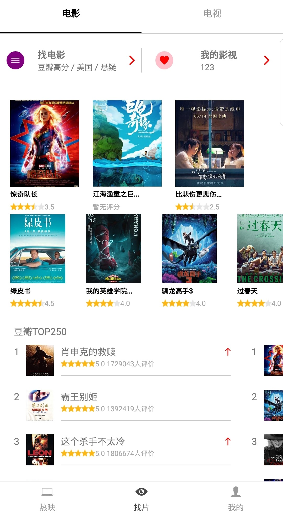

-
- Basic info. 基本信息
- 个人信息: 李祺 / 男
- 毕业院校: 陕西理工大学 / 本科 / 电子信息工程
- 工作经验: 两年
- GitHub: www.github.com/Honohonoho
-
- Experience. 项目与工作经验
 CLPS 上海华钦信息科技股份有限公司（2018.8 - 至今）
CLPS 上海华钦信息科技股份有限公司（2018.8 - 至今）-
花旗 Event Manage Interface 项目
外派至花旗参与 Event Manage Interface 项目，为了解决多管理平台的频繁切换登录问题，EMI 项目可以集中管理接入的各个平台，提供可视化的操作体验，前端使用 React、Redux、React-Router、Webpack、Rx.js构建。
主要完成了 Trade Processing 模块和持续维护工作。推动了 EMI 项目 CSS 的规范化，采用 BEM 规范优化相关样式，抽离可复用的样式，多个模块现已完成优化，提升了创建新模块的效率。
-
花旗 Clarity Dashboard 项目
Clarity Dashboard 是花旗面向客户的数据可视化平台，客户可以浏览相关资产及交易报表，为了解决海量数据下，前端渲染性能问题，前端分别使用 Qlik Sense 和 Angular 共同构建。
主要负责基础图表的构建及初步封装，使用 Qlik Sense 从 Impala 进行初步数据加载、筛选并格式化，并构建基础数据模型等工作。
参与并负责了 Prime Analysis、Tax Reclaims 项目的 Qlik Sense 搭建过程，结合 Qlik Sense 自身语法和业务情况，对相关流程和逻辑进行优化，使数据获取和数据模型构建耗时有了显著减少。
持续负责了 Custody Intraday 优化及迭代，配合 BA 持续改进用户体验并参与了需求生成到落地的完整流程。
 分享曲奇网络科技有限公司（2017.7 - 2018.8）
分享曲奇网络科技有限公司（2017.7 - 2018.8）-
懂得网PC端
负责懂得网PC端的前端开发工作，参与并负责两次网站改版的前端部分，并持续迭代维护。
项目初期使用 jQuery 和 Webpack 构建，改版时负责推动将前端的 CSS 和 JS 的进行了组件化改造， 使用 SCSS 编写了基础的样式组件库，使用 ES6 规范重构了基础 JS 模块（ES5），对 Webpack 进行了升级优化，大大提升了构建效率，减小了生产环境下的代码体积。
同时也承担了网站改版时主页的平面设计、动效设计工作，并得到采用，配合设计团队进行优化并最终上线。

-
懂得网移动端
负责懂得网移动端的前端开发工作，参与了从需求讨论，原型及交互设计再到技术开发的整个项目流程。
由于移动端访问流量比PC端高，所以使用 MIP 组件对移动端整体进行改造， 使其对搜索引擎有友好的 SEO 和更高的排序权重，重点落地页实现搜索结果页首位展示，网站 DAU 有了显著提高， 页面交互和数据请求使用独立开发的MIP组件，配合 CDN 和 百度搜索优化策略来加快页面访问速度。
项目使用 Webpack 和 MIP 组件构建，支持所有移动端主流浏览器，并使用 SCSS 编写了基础的样式组件库。 结合 MIP 规范，使用原生 JS 贡献了一些通用业务组件，并获得官方采纳。如：业务定制的视频播放组件、业务定制的音频播放组件、侧边菜单栏组件等。
-
懂得后台管理系统
负责管理后台的相关功能组件开发和维护，该管理后台具有视频上传，审核，驳回、发布等其他功能，满足网站编辑和供应商的使用需求。 可以根据用户身份进行权限管理，使用 Echarts 进行数据分析和呈现。
该项目基于 Vue、Vue-Router、Vuex、Element-UI、Webpack 技术栈开发， 负责对前端性能的进行优化，采取异步懒加载，负责了 Vue1.x => Vue2.x、Element-UI 的迁移升级， 优化 Vuex 中相关业务数据流逻辑，开发和重构相关基础组件。

-
小程序
负责开发懂得网的小程序，将网站内容分离为多个独立小程序，初步构建了多个相关小程序的闭环生态以及用户的支付、分享体系，满足了对网站用户的分流和转化
完成了多个小程序的前端部分，参与了前端部分的需求、设计、开发的完成过程，小程序采用前后端分离开发的方式，和后端协同完成了用户支付、登录、统计等功能。
个人项目
-
SAKURA UI 官网
SAKURA UI 是基于 Vue 2.0 的 UI 组件库，提供了常用的网格、布局、图标、按钮、标签页、输入框、消息提示、通知、折叠面板、级联选择器、轮播等常用 UI 组件， 持续开发中，适合移动端和 PC 端使用，现已发布至 NPM
初期 Parcel 打包代码，之后升级为 vue cli 3，使用 Karma + Mocha + Chai 搭建做自动化测试流程， 使用 Travis CI 持续集成，编写了shell脚本来完成一键部署。
同时 React + Typescript 版本也在边学习边开发中，同时积累了相关从零开始搭建并配置项目的经验，项目地址点我

-
React-Native APP 地址
使用 React-Native 和豆瓣开放API开发的一款电影APP，还原了大部分豆瓣电影的功能，包括正在上映电影，热门电影，搜索电影，用户中心等页面。
 -
Evernote 在线笔记本 预览
一款风格简单的在线笔记本，用户登录注册，登录后可以创建自己的笔记本进行记录，支持 Markdown 写作，支持预览和增删改查恢复等功能
使用的技术栈为 Vue全家桶、Webpack3.x、Element-UI、Axios、ES6 语法。

-
- Skill. 技能清单
前端
-
HTML / CSS
能够编写语义化的 HTML，可以编写符合 BEM 规范的 CSS 组件，完成较复杂的布局
熟悉 Sass、Less、PostCSS 等CSS预处理和模块化工具
-
JavaScript
熟悉原生 Javascript，能脱离 jQuery、zepto 等类库编码，了解常用的 ES6 语法
熟悉 Vue、React 的使用，可以配合相关 UI 库快速搭建项目。
了解 React Native 相关知识
了解 TypeScript 的基本使用
了解 Node.js 的相关知识，正在学习 SSR 相关知识
能运用模块化、面向对象的方式编程
-
其他
熟悉 Webpack、Parcel 等前端构建工具
可以使用单元测试来保障代码的健壮性，了解 持续集成 Travis CI 相关知识
了解命令行的使用，能够使用 Git 进行版本控制，喜欢使用 Markdown 进行文档书写
了解前端安全、性能优化方面的知识
其他属性
-
知乎重度用户、知乎专栏、简书作者，没事儿写点技术文章
百度 MIP 组件 、Cilicili 网站 Contributor
有参与开源项目的经验
李祺的简历
-
- Contact. 联系方式
- 电话: 17611579227
- 邮箱: 751718620@qq.com
- 微信: lq751718620
-
- Application. 应聘岗位
- 前端开发工程师
我目前正在寻找前端工程师岗位的工作机会，对我感兴趣的话就联系我吧！